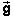
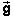

The applet is on Page 2. Under Useful Items, in the lower left corner of the window, the following activities are suggested for the applet:
Detailed information on how the applet functions and a lesson on projectile motion are available under Help in the top left corner of the applet.
The applet shows the motions of two balls performing projectile motion simultaneously. One ball (red) always moves without air resistance and is subject only to gravity. The other ball (yellow) moves with an acceleration consisting of two parts: one due to gravity and one due to air resistance. The former is constant, the latter has magnitude proportional to the square of the ball's speed and direction opposite to the ball's velocity.
Expressed in symbols, the x and y components of the yellow ball's acceleration, ax and ay, are equal to:
where C is the drag coefficient (adjustable), m the ball's mass (adjustable), v the ball's speed, vx and vy the x and y-components of the ball's velocity (initial velocity adjustable), and g the magnitude of the acceleration due to gravity (adjustable).
The x-axis is horizontal and points to the right, and the y-axis is vertical and points upward.
These two equations can be expressed by the one vector equation
 =  - (C/m) v
=  - (C/m) v  .
.